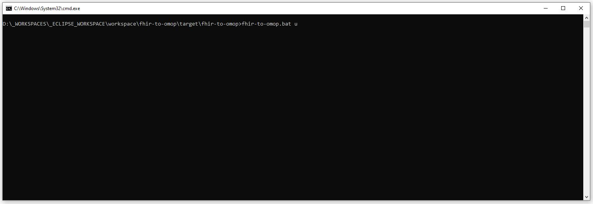
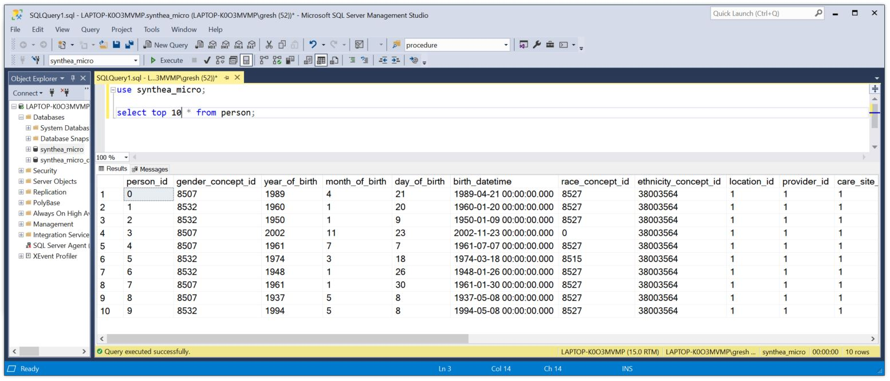

The PopulateOmopInstanceFromFhirFiles tool can be used to populate an OMOP instance from a set of files representing FHIR patients. This tool is configured in the app.properties file. This tool will scan a root directory. Each directory in the root directory represents a patient. All of the files in that directory are Patient/[id]/$everything resources. Each Patient/[id]/$everything file is read. The set of files are parsed into a single OmopPerson object. The OmopPerson object is composed of Data Value Objects (DVOs) that are exact 1:1 mappings to the OMOP CDM. The OmopPerson object is then written to the OMOP CDM Database.
The PopulateOmopInstanceFromFhirFiles tool has a main method and can be called directly.
This tool can be run from the Standalone Application using the "download" or "d" option:
fhir-to-omop upload
fhir-to-omop u
# --- # UPLOAD STUFF # --- # dir where your fhir patients live (this will be used to populate your omop instance downloadOutputDir=D:\\NACHC\\SYNTHEA\\TEST\\patients-test maxNumberOfWorkersForUpload=20 maxNumberOfThreadsForUpload=20 maxNumberOfConnectionsForUpload=20 conceptCacheSize=1000000
These parameters are used as follows
The Upload Tool can be run from the Standalone application as shown below by entering the command shown below. The second screen shot shows what the application should look like when it has finished.
fhir-to-omop.bat u
Congratulations! Your OMOP instance should now be populated with your FHIR Patients. You should be able to browse the OMOP database and use the OHDSI tools to browse, analyze, and otherwise use your data.
